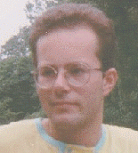

Luca Pavan was born in 1969 in Rome - Italy. He carried out his musical studies in Latina at the Conservatoire of Music "Ottorino Respighi". In 1992 he got a diploma of pianoforte, in 1996 a diploma of Electronic Music with full marks, in 1997 a diploma of Musical Composition. He also attends the Faculty of Arts at the 1st University of Rome. His compositions were performed in some italian towns; in 1993 he worked to a new orchestration of the opera Lo frate ënnamorato by G. B. Pergolesi (1710-1736), which was performed in Rome in the same year. In 1995 one of his electroacoustic works (Code, 1994) was performed during the XI Colloqium on Musical Informatics (Bologna, 1995). Recently his composition Zone d'ombra (1995-96) has been performed during the ICMC '97 (International Computer Music Conference, Thessaloniki, 1997). He has obtained a Fellowship by the Government of Canada to realize electroacoustic works in the year 1998 at the Simon Fraser University (Vancouver).
Tape music:
Sinless (1993-94, for clarinet in A, flute and tape)Murales (1994, tape only)
Code (1994, tape only)
Zone d'ombra (1995-96, harpsichord and tape, tape only version)
In Aulanko (1996, tape only)
Fin de siËcle (1996, piano and tape)
The impossible planet (1997, tape only)
Composing programs:
GPM5 (1995-96, score generator for Music 5, Dos platforms)MCCs - Musique ConcrËte for Csound (1997, score generator for Csound, Dos platforms)
On the Internet:
pavan@panservice.it